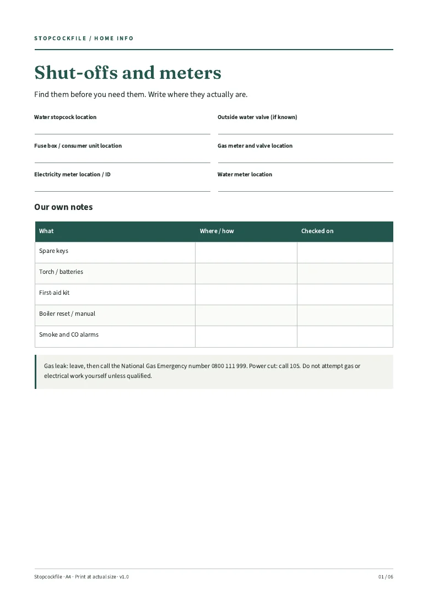
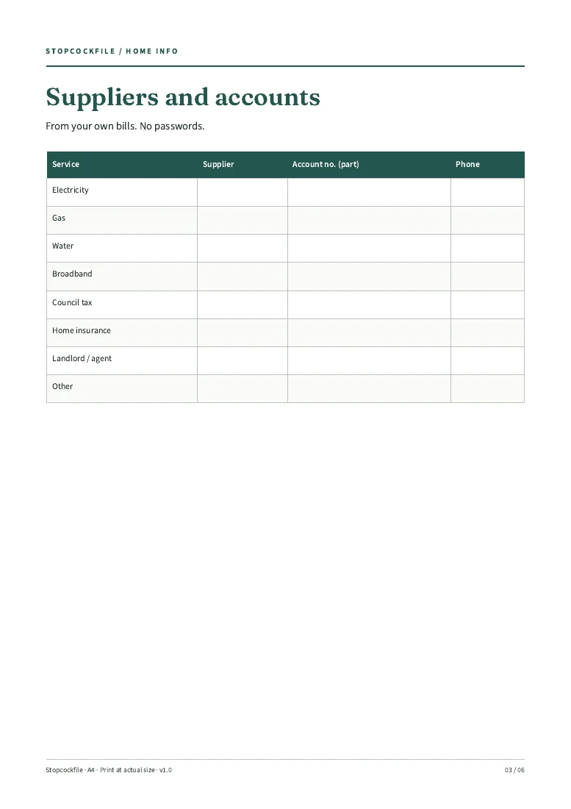

Walk round the home
Find the stopcock, fuse box and meters and write where they are.
FOR THE KITCHEN DRAWER
A printable home information pack: stopcock, fuse box and meters, supplier contacts, appliance details and bin days in one folder.
For: UK households, tenants and homeowners. You get: 6-page A4 printable PDF, to download. Price: £6 one-off (planned; not on sale yet).
Checkout is not open. No orders or payments taken.
6-page A4 printable PDF · Digital files only

LOOK INSIDE
These are renders of the actual included pages. The pack is built; the shop is not open yet.

THREE SIMPLE STEPS
Find the stopcock, fuse box and meters and write where they are.
Copy details from your bills. No passwords.
One folder for the household, guests or a house-sitter.
ONE PACK. ONE PRICE.
Date-free pages for one home. Reprint when you move.
A household record, not safety, electrical, gas or legal advice. In an emergency call the relevant emergency service or network; do not attempt work you are not qualified to do.
Standard A4 PDF, rendered and text-extracted in Chromium/Poppler. Made for pen and paper; not fillable or an app.
Stopcockfile / Digital pack
£6
Planned price · one-off · not on sale
No order can be placed here. No payment is collected.
No purchases yet. Checkout must show delivery, cancellation and refund terms before sales open. Statutory rights will not be excluded.
BEFORE YOU DECIDE
Standard A4 PDF, rendered and text-extracted in Chromium/Poppler. Made for pen and paper; not fillable or an app.
Fill page 1 first. The rest can be added as bills arrive; no setup time is promised.
Not yet. The files have been built, but checkout and paid delivery are not open. This page does not take orders or reserve a place.
No purchases are being taken. Sale and delivery terms, including your cancellation and statutory rights, must be shown before checkout opens. There is no blanket “no refunds” policy.
Stopcockfile is a UK sole-trader trading name. No safety inspections, repair instructions, or gas or electrical advice. Not a tenancy, insurance or legal document. Please check the previews and limits before buying once sales open.
STOPCOCKFILE / 6-page A4 printable PDF
£6 planned · one-off. Checkout is not open.